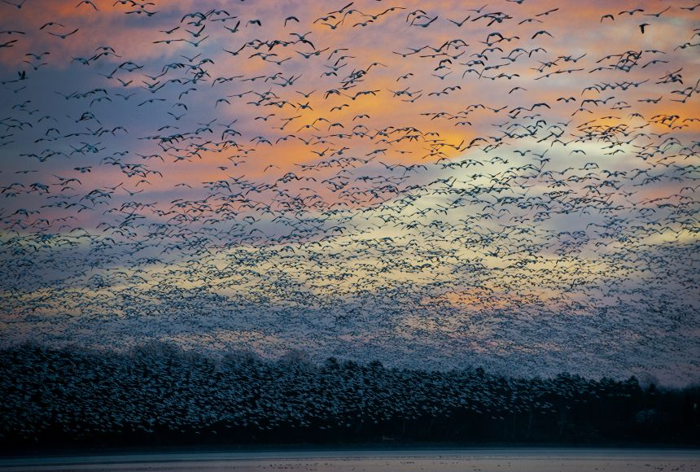

What is this: Animal migration patterns
Greater Snow Geese flying over the Saint Francis river in southeastern Missouri.
Source: NatGeo
I find almost all things interesting, and enjoy condensing varied sources of information about a topic into a structured, thorough format. My view is understanding anything is easier when you're aware of the landscape or map, i.e., what is the spectrum of opinions, research, and / or conclusions made on that topic? Apart from the essays, this is what this site aims to produce: the landscape.Hello test hello sample linkI find almost all things interesting, and enjoy condensing varied sources of information about a topic into a structured, thorough format. My view is understanding anything is easier when you're aware of the landscape or map, i.e., what is the spectrum of opinions, research, and / or conclusions made on that topic? Apart from the essays, this is what this site aims to produce: the landscape.Hello test hello sample linkI find almost all things interesting, and enjoy condensing varied sources of information about a topic into a structured, thorough format. My view is understanding anything is easier when you're aware of the landscape or map, i.e., what is the spectrum of opinions, research, and / or conclusions made on that topic? Apart from the essays, this is what this site aims to produce: the landscape.Hello test hello sample linkI find almost all things interesting, and enjoy condensing varied sources of information about a topic into a structured, thorough format. My view is understanding anything is easier when you're aware of the landscape or map, i.e., what is the spectrum of opinions, research, and / or conclusions made on that topic? Apart from the essays, this is what this site aims to produce: the landscape.Hello test hello sample linkI find almost all things interesting, and enjoy condensing varied sources of information about a topic into a structured, thorough format. My view is understanding anything is easier when you're aware of the landscape or map, i.e., what is the spectrum of opinions, research, and / or conclusions made on that topic? Apart from the essays, this is what this site aims to produce: the landscape.Hello test hello sample linkI find almost all things interesting, and enjoy condensing varied sources of information about a topic into a structured, thorough format. My view is understanding anything is easier when you're aware of the landscape or map, i.e., what is the spectrum of opinions, research, and / or conclusions made on that topic? Apart from the essays, this is what this site aims to produce: the landscape.Hello test hello sample linkI find almost all things interesting, and enjoy condensing varied sources of information about a topic into a structured, thorough format. My view is understanding anything is easier when you're aware of the landscape or map, i.e., what is the spectrum of opinions, research, and / or conclusions made on that topic? Apart from the essays, this is what this site aims to produce: the landscape.Hello test hello sample linkI find almost all things interesting, and enjoy condensing varied sources of information about a topic into a structured, thorough format. My view is understanding anything is easier when you're aware of the landscape or map, i.e., what is the spectrum of opinions, research, and / or conclusions made on that topic? Apart from the essays, this is what this site aims to produce: the landscape.Hello test hello sample link